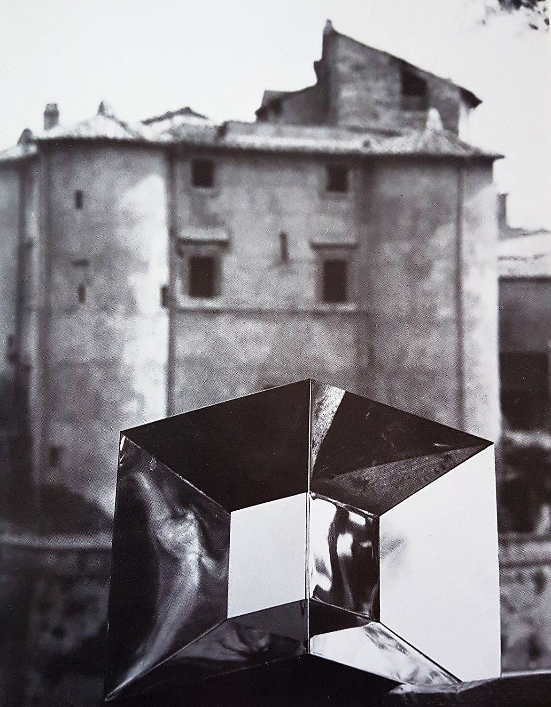
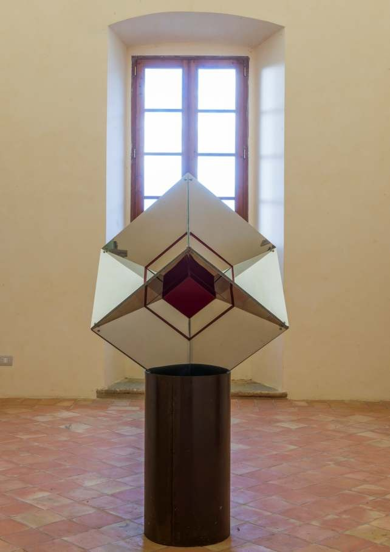

ipercubo
 Lo scultore Attilio Pierelli con la sua opera Ipercubo
Lo scultore Attilio Pierelli con la sua opera Ipercubo
Esposta per la prima volta nel giugno del 1974 alla mostra De Mathematica, curata da Filiberto Menna, presso Galleria L’Obelisco di Roma, la scultura Ipercubo venne realizzata in collaborazione con uno dei più geniali scienziati italiani del secondo dopoguerra, Giuseppe Arcidiacono, docente di meccanica superiore all'Università di Perugia e membro dell'Istituto Nazionale di Alta Matematica di Roma. In una delle sue ultime interviste, Pierelli raccontava così la nascita di questo singolare e magico sodalizio:
«Vidi su un banchetto di libri usati “Tempo, Spazio e Universo” di un autore di origine siciliana, Giuseppe Arcidiacono, […] lo cercai sull’elenco telefonico. Lo trovai, gli chiesi umilmente un colloquio. Mi invitò nella sua casa e ci andai, […]. Gli dissi, sto facendo queste esperienze sulle forme e non ne capisco fino in fondo il significato. Mi fece una lezione che quando uscii, barcollavo. Vide le mie opere e mi disse: lei sta lavorando sulla geometria euclidea, la geometria curva, il preludio all’Iperspazio. […] Con lui mi feci una cultura. […] Mi procurai dei libri e cominciai a studiare. Tutti i giorni, per 10 anni, per almeno tre ore, sul legame tra la realtà e la sua immagine»
E proprio verso questi due paradigmi della visione (ciò che si vede e ciò che è realmente) che, a partire da opere come l’Ipercubo, lo scultore marchigiano concentrerà la propria attenzione. Interamente in acciaio inox e dotato della straordinaria proprietà di autocostruirsi, l’ipercubo di Pierelli è composto da un cubo esterno che l’osservatore, ingannato dall’accorciamento prospettico, vede costituito da sei cubi, le cui facce sono tronchi di piramide rovesciata, all’interno dei quali scorgiamo, per effetto dei rispecchiamenti, un settimo cubo interno.
Ed ecco come la composizione di ben otto cubi tridimensionali permetterà di vedere un unico IPER-cubo appartenente alla quarta dimensione dell'IPER-spazio. All’interno di questo perfetto binomio di regolarità e simmetria, il motore dell’illusione ottica ottenuta è però la luce: sospeso nello spazio infinito, il corpo geometrico viene attraversato da raggi luminosi che, colpendone l'interno, deformano sul piano la sua immagine. Emanando luce come un cristallo, l’opera penetra così quello spazio misterioso ed impercettibile, la cui risultante sarà una forma complessa e compressa nella sua “dimensionalità”.
L’Ipercubo è la prima figura iperspaziale concretizzata da Pierelli, ma in seguito verranno realizzate anche le rappresentazioni di quelli che sono convenzionalmente il primo ed il terzo solido regolare dello spazio a quattro dimensioni, Pentacella e Sedicicella.
É come se un'esplosione dilaniasse la massa compatta di queste forme quasi magiche che una volta sezionate, composte e ricomposte, mostrano un INTERNO la cui intrinseca irrequietezza lo spinge a volersi fare ESTERNO, con il “dentro” che sembra quasi aspirare a diventare “fuori”.
Pierelli vuole liberarsi della forma assoluta (tridimensionale), la distrugge per poi moltiplicarla attraverso nuove coordinate, scoprendo il senso cosmico di una visione di mondi (im)possibili. Ovviamente, queste sculture non sono dei veri oggetti iperspaziali, a noi inaccessibili, ma le loro rappresentazioni nel nostro spazio tridimensionale. Sono fotografie, ombre a tre dimensioni, appunti di un utopico viaggio svolto nel tetraspazio.
Attraverso le coordinate matematiche degli iperspazi, Pierelli è riuscito a creare delle forme capaci di materializzarsi in corpi geometrici se investite da un sottile velo di luce, a riprova di quel sottile ma profondo legame tra la realtà e la sua immagine, che ci apparirà sempre deformata per via della luce. Un esemplare dell’Ipercubo di Pierelli è stato posto all’ingresso del Campus Scientifico-Sogene dell’Università degli studi di Roma Tor Vergata, una sorta di richiamo visivo sotto forma di “epifania geometrica” per tutti gli studenti che si recano nelle varie sedi delle Facoltà scientifiche.
arte e scienza a confronto
Diversamente da ciò che accade nel diagramma di Schlegel di un ipercubo,
in cui il cubo interno centrale della figura viene semplicemente disegnato, nella scultura di Pierelli esso viene reso addirittura visibile, grazie ai rispecchiamenti. Una sequenza aritmetica regola la struttura IPERSPAZIALE dell’Ipercubo, composto da otto cubi tridimensionali, a loro volta formati da sei superfici quadrate bidimensionali. Nella proiezione prospettica di Schlegel le sei superfici bidimensionali non possono diventare sei cubi, poiché imprigionate in un disegno la cui terza dimensione è solo apparente. Pierelli con la sua opera “ipercubica” è invece riuscito ad andare oltre questo limite. Nella scultura infatti, se il cubo interno si trova alla fine di un altro cubo, distorto dalla prospettiva, e se i lati del primo hanno la stessa misura dei lati che vediamo nel secondo, allora il cubo interno sarà grande esattamente quanto quello esterno. Immaginando poi che il cubo interno cominci ad avanzare, questo crescerà al punto di combaciare perfettamente con quello esterno, ottenendo infine, grazie al gioco creato dalla prospettiva, un nuovo cubo interno, concepito dalla convergenza prospettica effettuata dal “primo” cubo interno.
Come il Rinascimento seppe raffigurare la terza dimensione su una superficie bidimensionale (artisti come Brunelleschi o Piero della Francesca seppero trasformare in immagini e oggetti le potenzialità della geometria euclidea), offrendo quindi la percezione fisica di idee astratte, allo stesso modo Pierelli è stato capace di rappresentare la quarta dimensione nella tridimensionalità. L’artista marchigiano si servì semplicemente della prospettiva centrale bidimensionale e della sua teoria delle linee convergenti, intese come rette parallele che si incontrano all’infinito, per descrivere qualcosa che l’uomo è ancora soltanto in grado di immaginare.
L’esempio della scultura di Pierelli dimostra come spesso l’arte divenga il ponte fra conoscenza ed esperienza sensibile, e come quest’ultima sia fortemente influenzata dai processi artistici. Poiché comprensione e visione non possono venir separate, l’arte dona all’osservatore la capacità di "riflessione", fondendone la doppia accezione che deriva dal termine latino REFLECTERE, pensare e specchiare, dunque ragionare e riflettere tramite immagini. L’artista pensa e riflette, attraverso le immagini, tutti quei processi prodotti dall’intelletto umano, rendendo visibile ciò che, altrimenti, rimarrebbe pura astrazione.
Attraverso la scultura di Pierelli è dunque possibile sostenere la concezione cartesiana secondo la quale la percezione umana sia ingannevole poiché ci permette, complice il pensiero matematico, di vedere corpi che in realtà non esistono. Ciò che si trova al di là della nostra esperienza può essere percepito soltanto attraverso espedienti di natura illusionistica, ma l’opera d’arte ci porta a riconoscere come tali illusioni ottiche possano comunque creare un mondo davanti a noi.
«Il punto di partenza per una nuova concezione è dovuto probabilmente a Kandinsky, che nel suo libro Ueber das Geistige in der Kunst pone nel 1912 le premesse di un'arte nella quale l'immaginazione dell'artista sarebbe stata sostituita dalla concezione matematica. […]
Si sostiene che l’arte non ha niente a che fare con la matematica, che quest’ultima costituisce una materia arida, non artistica, un campo puramente intellettuale e di conseguenza estraneo all’arte. Nessuna di queste due argomentazioni è accettabile perché l’arte ha bisogno del sentimento e del pensiero. Il pensiero permette di ordinare i valori emozionali perché da essi possa uscire l’opera d’arte»
L’arte può incontrare la realtà nell’apparenza, poiché tutto quello che la nostra natura rifiuta e che la scienza non è in grado di farci vedere, ci viene offerto da essa. Così, se nell’incertezza delle percezioni sensibili noi andremo a considerare il pensiero matematico, come l’astrazione che rende pensabile la natura, l’opera di un artista sarà allora la sua materializzazione.

Attilio Pierelli intento a specchiarsi in una delle sue Piastre Inox,Roma (studio dell’artista), 1966
 Ipercubo, 1974 acciaio inox, cm 60x60x60, Collezione Pierelli
Ipercubo, 1974 acciaio inox, cm 60x60x60, Collezione Pierelli Ipercubo, 1974, acciaio inox, cm 25x25x25, Roma, Collezione G. Arcidiacono
Ipercubo, 1974, acciaio inox, cm 25x25x25, Roma, Collezione G. Arcidiacono
Ipercubo, 1974 acciaio inox, cm 60x60x60, San Giustino (PG), Villa Magherini Graziani di Celalba